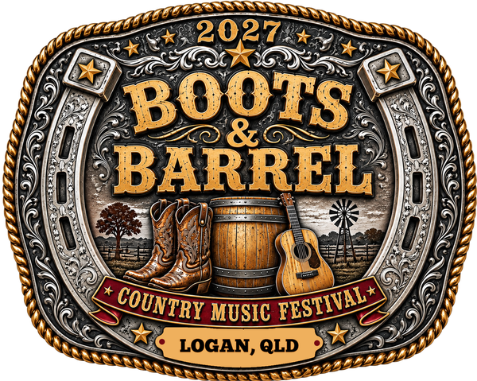

Boots & Barrel is a new country music festival in development for Logan, Queensland, aiming to create a high-quality community event celebrating Australian country music.

The festival is Razor Blade Productions' major live music project, covering branding, sponsorship, website development, marketing, logistics and event planning.
razorbladeproductions.com.au →
Deliver a successful inaugural festival in 2027 and build a long-term annual community event.
← Back to Projects